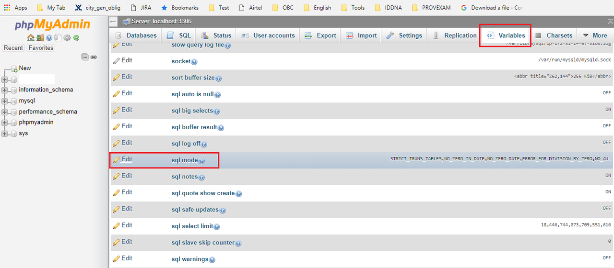

SELECT list is not in GROUP BY clause and contains nonaggregated column .... incompatible with sql_mode=only_full_group_by
I'm using MySQL 5.7.13 on my windows PC with WAMP Server
My problem is while executing this query
SELECT * FROM `tbl_customer_pod_uploads` WHERE `load_id` = '78' AND `status` = 'Active' GROUP BY `proof_type`
I'm getting always error like this
Expression #1 of SELECT list is not in GROUP BY clause and contains nonaggregated column 'returntr_prod.tbl_customer_pod_uploads.id' which is not functionally dependent on columns in GROUP BY clause; this is incompatible with sql_mode=only_full_group_by
Can you please tell me the best solution.
I need result like
+----+---------+---------+---------+----------+-----------+------------+---------------+--------------+------------+--------+---------------------+---------------------+ | id | user_id | load_id | bill_id | latitude | langitude | proof_type | document_type | file_name | is_private | status | createdon | updatedon | +----+---------+---------+---------+----------+-----------+------------+---------------+--------------+------------+--------+---------------------+---------------------+ | 1 | 1 | 78 | 1 | 21.1212 | 21.5454 | 1 | 1 | id_Card.docx | 0 | Active | 2017-01-27 11:30:11 | 2017-01-27 11:30:14 | +----+---------+---------+---------+----------+-----------+------------+---------------+--------------+------------+--------+---------------------+---------------------+
Answer
This
Expression #1 of SELECT list is not in GROUP BY clause and contains nonaggregated column 'returntr_prod.tbl_customer_pod_uploads.id' which is not functionally dependent on columns in GROUP BY clause; this is incompatible with sql_mode=only_full_group_by
will be simply solved by changing the sql mode in MySQL by this command,
SET GLOBAL sql_mode=(SELECT REPLACE(@@sql_mode,'ONLY_FULL_GROUP_BY',''));
This too works for me.. I used this, because in my project there are many Queries like this so I just changed this sql mode to only_full_group_by
OR simply include all columns in the GROUP BY clause that was specified by the SELECT statement. The sql_mode can be left enabled.
Thank You... :-)
Suggest
There is a system variable ONLY_FULL_GROUP_BY in MySql engine.
From Mysql Version 5.7.5 : ONLY_FULL_GROUP_BY SQL mode is enabled by
default
Before Version 5.7.5 : ONLY_FULL_GROUP_BY was not enabled by default.
If the ONLY_FULL_GROUP_BY SQL mode is enabled (which it is by default from
version 5.7.5), MySQL rejects queries for which the select list, HAVING
condition, or ORDER BY list refer to non-aggregated columns that are neither
named in the GROUP BY clause nor are functionally dependent on them.
To sort out the issue, use any one solution (out of below 3)
(1) PHPMyAdmin
Disable : ONLY_FULL_GROUP_BY mode
if you are using phpMyAdmin then change the sql_mode setting as
mentioned in the below screenshot. 
Edit sql mode variable and remove the ONLY_FULL_GROUP_BY text from the
value
OR
(2) SQL/Command prompt
Disable : ONLY_FULL_GROUP_BY mode by running the below command.
SET GLOBAL sql_mode=(SELECT REPLACE(@@sql_mode,'ONLY_FULL_GROUP_BY',''));
OR
(3) Don't useSELECT *
Do not disable the ONLY_FULL_GROUP_BY mode but
Use relevant column in SELECT query. relevant means columns, which are
either coming in group by clause or column with the aggregate function
(MAX, MIN, SUM, COUNT etc)
Important note
Changes made by using point(1) OR point(2) does not set it PERMANENTLY, and
it will revert after every restart.
So you should set this in your config file (e.g. /etc/mysql/my.cnf in the
[mysqld] section), so that the changes remain in effect after MySQL restart:
Config File : /etc/mysql/my.cnf
Variable name : sql_mode OR sql-mode
Remove word ONLY_FULL_GROUP_BY from the value and save the file.
Note : If you have not found sql_mode variable in the config file than
please insert below 2 lines at the end of the file
[mysqld] sql_mode = STRICT_TRANS_TABLES,NO_ZERO_IN_DATE,NO_ZERO_DATE,ERROR_FOR_DIVISION_BY_ZERO,NO_AUTO_CREATE_USER,NO_ENGINE_SUBSTITUTION